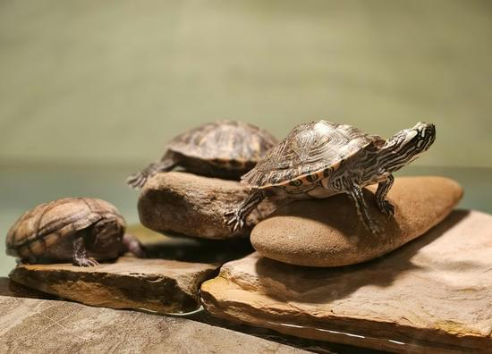
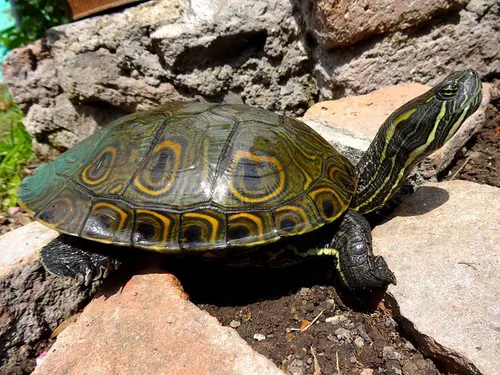
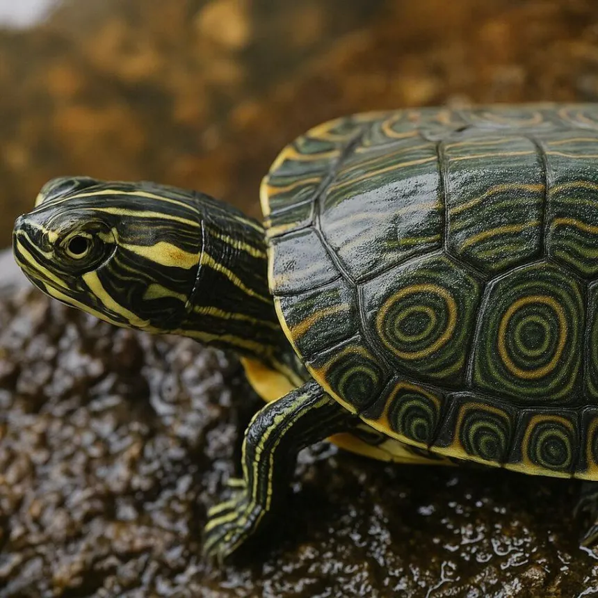

Welcome to The Peacock Tortoise Blog
Did you know that this type of turtle real habitat is on the amazon river
also, they are a tropical type animal so if they get temperatures under 20 degrees
they will start they process of hibernation. Crazy, isn't it?
Peacock turtles are so incredible, they are a type of a reptil
but they are not full acuatic, they semi-acuatic turtles!
If you want to learn more about this incredible turtles, you may visit
our section about them!